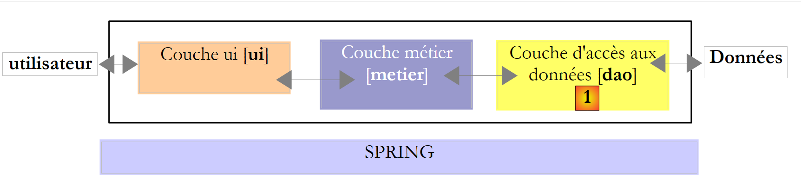
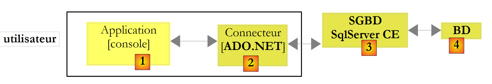
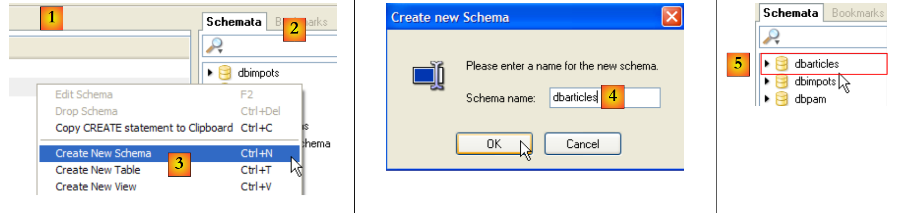
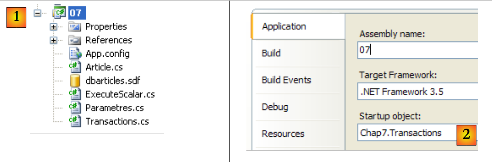
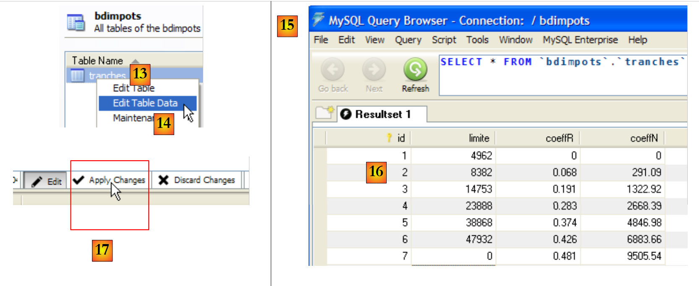
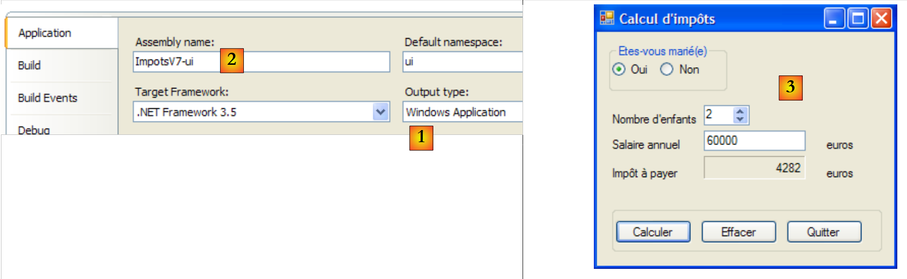

9. Database access
9.1. ADO.NET Connector
Let’s revisit the layered architecture used on several occasions
 |
In the examples studied, the [dao] layer has so far utilized two types of data sources:
- data hard-coded in the code
- data from text files
In this chapter, we examine the case where data comes from a database. The three-tier architecture then evolves into a multi-tier architecture. There are various types. We will explore the basic concepts using the following:
 |
In the diagram above, the [DAO] layer [1] communicates with the DBMS [3] through a class library specific to the DBMS in use and provided with it. This layer implements standard features grouped under the term ADO (ActiveX Data Objects). Such a layer is called a provider (in this case, a database access provider) or a connector. Most DBMSs now have an ADO.NET connector, which was not the case in the early days of the .NET platform. .NET connectors do not provide a standard interface to the [DAO] layer, so the latter includes the names of the connector’s classes in its code. If you switch DBMS, you switch connectors and classes, and you must then change the [DAO] layer. This is both a high-performance architecture—because the .NET connector, having been written for a specific DBMS, knows how to make the best use of it—and a rigid one, since changing the DBMS implies changing the [DAO] layer. This second argument should be put into perspective: companies do not change DBMS very often. Furthermore, we will see later that since version 2.0 of .NET, there has been a generic connector that provides flexibility without sacrificing performance.
9.2. The two ways to access a data source
The .NET platform allows a data source to be used in two different ways:
- connected mode
- disconnected mode
In connected mode, the application
- opens a connection to the data source
- works with the data source in read/write mode
- closes the connection
In offline mode, the application
- opens a connection to the data source
- retrieves a memory copy of all or part of the data from the source
- closes the connection
- works with the in-memory copy of the data in read/write mode
- when the work is finished, opens a connection, sends the modified data to the data source so that it can be updated, and closes the connection
Here, we are only considering the connected mode.
9.3. Basic concepts of database operation
We will explain the main concepts of using a database with SQL Server Compact 3.5. This DBMS is included with Visual Studio Express. It is a lightweight DBMS that can only handle one user at a time . However, it is sufficient for an introduction to database programming. Later, we will introduce other DBMSs.
The architecture used will be as follows:
 |
A console application [1] will utilize a SQL Server Compact database [3,4] via this DBMS’s ADO.NET connector [2].
9.3.1. : Sample Database
We will build the database directly in Visual Studio Express. To do this, we create a new console project.
 |
- [1]: the project
- [2]: Open the "Database Explorer" view
- [3]: Create a new connection
 |
- [4]: Select the DBMS type
- [5,6]: Select SQL Server Compact
- [7]: Create the database
- [8]: A SQL Server Compact database is encapsulated in a single file with the .sdf extension. Specify where to create it; here, in the C# project folder.
- [9]: Name the new database [dbarticles.sdf]
- [10]: Select French. This affects sorting operations.
- [11,12]: The database can be password-protected. Here, "dbarticles".
- [13]: Confirm the information page. The database will now be physically created:
 |
- [14]: The name of the database that has just been created
- [15]: Check the "Save my password" option so you don’t have to re-enter it every time
- [16]: Verify the connection
- [17]: Everything is fine
- [18]: Confirm the information page
- [19]: The connection appears in the database explorer
- [20]: For now, the database has no tables. Let’s create one. An article will have the following fields:
- id: a unique identifier—primary key
- name: name of the item - unique
- price: the item's price
- currentStock: its current stock
- minstock: the minimum stock level below which the item must be restocked
 |
- [21]: The [id] field is of type integer and is the primary key [22] of the table.
- [23]: This primary key is of the Identity type. This concept, specific to the SQL Server DBMS, indicates that the primary key will be generated by the DBMS itself. Here, the primary key will be an integer starting at 1 and incremented by 1 for each new key.
 |
- [24]: The other fields are created. Note that the [name] field has a unique constraint on its [25].
- [26]: We give the table a name
- [27]: After validating the table structure, it appears in the database.
 |
- [28]: We request to view the table's contents
- [29]: It is empty for now
- [30]: We populate it with some data. A row is validated as soon as we move on to entering the next row. The [id] field is not entered: it is generated automatically when the row is validated.
We still need to configure the project so that this database, which is currently in the project root, is automatically copied to the project's runtime folder:
 |
- [1]: We ask to see all files
- [2]: The database [dbarticles.sdf] appears
- [3]: We include it in the project
 |
- [4]: Adding a data source to a project launches a wizard, which we do not need here [5].
- [6]: The database is now part of the project. We return to normal mode [7].
- [8]: The project with its database
- [9]: In the database properties, we can see [10] that it will be automatically copied to the project’s runtime folder. This is where the program we’re going to write will retrieve it.
Now that we have a database available, we can start using it. Before we do that, let’s review some SQL basics.
9.3.2. The four basic commands of the SQL language
SQL (Structured Query Language) is a partially standardized language for querying and updating databases. All DBMSs comply with the standardized part of SQL but add proprietary extensions to the language that take advantage of certain features of the DBMS. We have already encountered two examples of this: the automatic generation of primary keys and the allowed types for table columns are often dependent on the DBMS.
The four basic SQL commands we present here are standardized and supported by all DBMSs:
The query used to retrieve data from a database. Only the keywords in the first line are required; the others are optional. There are other keywords not listed here.
| |
Inserts a row into table. (col1, col2, ...) specifies the columns of the row to be initialized with the values (val1, val2, ...). | |
Updates the rows in table that satisfy condition (all rows if no where clause). For these rows, the col1 column is set to the value val1 | |
Deletes all table rows that satisfy the condition |
We will write a console application that issues SQL commands on the [dbarticles] database we created earlier. Here is an example of the application in action. The reader is encouraged to understand the SQL commands issued and their results.
- Line 1: the connection string: it contains all the parameters needed to connect to the database.
- Line 3: We query the contents of the [articles] table
- Line 16: We insert a new row. Note that the id field is not initialized in this operation because the DBMS will generate the value for this field.
- Line 19: Verification. Line 28: The row has been successfully added.
- Line 30: We increase the price of the item that was just added by 10%.
- Line 33: Verification
- Line 42: The price increase has indeed taken place
- Line 44: We delete the item we added previously
- Line 47: Verify
- Lines 53–55: The item is no longer there.
9.3.3. The basic ADO.NET interfaces for connected mode
Let’s return to the diagram of an application accessing a database through an ADO.NET connector:
 |
In connected mode, the application:
- opens a connection to the data source
- works with the data source in read/write mode
- closes the connection
Three ADO.NET interfaces are primarily involved in these operations:
- IDbConnection, which encapsulates the connection’s properties and methods.
- IDbCommand, which encapsulates the properties and methods of the executed SQL command.
- IDataReader, which encapsulates the properties and methods of the result of an SQL Select statement.
Used to manage the connection to the database. The M methods and P properties of this interface that we will use are as follows:
Name | Type | Role |
P | Database connection string. It specifies all the parameters required to establish a connection with a specific database. | |
M | Opens the connection to the database defined by ConnectionString | |
M | Closes the connection | |
M | starts a transaction. | |
P | Connection state: ConnectionState.Closed, ConnectionState.Open, ConnectionState.Connecting, ConnectionState.Executing, ConnectionState.Fetching, ConnectionState.Broken |
If Connection is a class that implements the IDbConnection interface, the connection can be opened as follows:
Used to execute an SQL command or a stored procedure. The methods M and properties P of this interface that we will use are as follows:
Name | Type | Role |
P | specifies what to execute - takes its values from an enumeration: - CommandType.Text: executes the SQL statement defined in the CommandText property. This is the default value. - CommandType.StoredProcedure: executes a stored procedure in the database | |
P | - the text of the SQL statement to execute if CommandType= CommandType.Text - the name of the stored procedure to execute if CommandType= CommandType.StoredProcedure | |
P | the IDbConnection connection to use to execute the SQL statement | |
P | the IDbTransaction transaction in which to execute the SQL statement | |
P | The list of parameters for a parameterized SQL statement. The statement `update articles set price=price*1.1 where id=@id` has the parameter `@id`. | |
M | To execute a SELECT SQL statement. This returns an IDataReader object representing the result of the SELECT statement. | |
M | to execute an SQL Update, Insert, or Delete statement. The number of rows affected by the operation (updated, inserted, or deleted) is returned. | |
M | to execute an SQL Select statement that returns a single result, such as: select count(*) from articles. | |
M | to create the IDbParameter parameters of a parameterized SQL statement. | |
M | allows you to optimize the execution of a parameterized query ( ) when it is executed multiple times with different parameters. |
If Command is a class that implements the IDbCommand interface, executing an SQL statement without a transaction will take the following form:
Used to encapsulate the results of an SQL SELECT statement. An IDataReader object represents a table with rows and columns, which are processed sequentially: first the first row, then the second, and so on. The methods (M) and properties (P) of this interface that we will use are as follows:
Name | Type | Role |
P | The number of columns in the IDataReader table | |
M | GetName(i) returns the name of column i in the IDataReader table. | |
P | Item[i] represents column number i of the current row in the IDataReader table. | |
M | moves to the next row of the IDataReader table. Returns True if the read operation was successful, False otherwise. | |
M | Closes the IDataReader table. | |
M | GetBoolean(i): returns the Boolean value of column i in the current row of the table IDataReader. Other similar methods are as follows: GetDateTime, GetDecimal, GetDouble, GetFloat, GetInt16, GetInt32, GetInt64, GetString. | |
M | Getvalue(i): returns the value of column i in the current row of the IDataReader table as an object type. | |
M | IsDBNull(i) returns True if column i of the current row in the IDataReader table has no value, which is represented by the SQL NULL value. |
Using an IDataReader object often looks like the following:
9.3.4. Error handling
Let’s revisit the architecture of a database application:
 |
The [DAO] layer may encounter numerous errors while operating the database. These errors will be reported as exceptions thrown by the ADO.NET connector. The [DAO] layer code must handle them. Any database operation must be performed within a try/catch/finally block to catch and handle any exceptions and release the necessary resources. Thus, the code shown above for processing the result of a SELECT statement becomes the following:
Regardless of what happens, the IDataReader and IDbConnection objects must be closed. That is why this closure is performed in the finally blocks.
Closing the connection and the IDataReader object can be automated using a using statement:
- Line 3: the using clause ensures that the connection opened within the using(...){...} block will be closed outside of it, regardless of how the block is exited—whether normally or due to an exception. We save a finally block, but the benefit isn’t in this minor saving. Using a using statement prevents the developer from having to close the connection manually. However, forgetting to close a connection can go unnoticed and “crash” the application in a seemingly random way, whenever the DBMS reaches the maximum number of open connections it can support.
- Line 11: Follow the same procedure to close the IDataReader object. ### 9.3.5. Configuring the sample project
The final project will look like this:
 |
- [1]: The project will have a configuration file [App.config]
- [2]: It uses classes from two DLLs that are not referenced by default and must therefore be added to the project references:
- [System.Configuration] to use the [App.config] configuration file
- [System.Data.SqlServerCe] to use the SQL Server Compact database
- [3, 4]: explain how to add references to a project.
- [5, 6]: Recap of how to add the [App.config] file to a project.
The [App.config] configuration file will be as follows:
<?xml version="1.0" encoding="utf-8" ?>
<configuration>
<connectionStrings>
<add name="dbSqlServerCe" connectionString="Data Source=|DataDirectory|\dbarticles.sdf;Password=dbarticles;" />
</connectionStrings>
</configuration>
- Lines 3–5: The plural <connectionStrings> tag defines connection strings to databases. A connection string takes the form "parameter1=value1;parameter2=value2;...". It specifies all the parameters required to establish a connection with a specific database. These connection strings vary by DBMS. The website [http://www.connectionstrings.com/] provides the formats for the major DBMSs.
- Line 4: defines a specific connection string, in this case for the SQL Server Compact database dbarticles.sdf that we created earlier:
- name = name of the connection string. It is via this name that a connection string is retrieved by the C# program
- connectionString: the connection string for a SQL Server Compact database
- DataSource: specifies the database path. The syntax |DataDirectory| refers to the project’s execution folder.
- Password: the database password. This parameter is omitted if there is no password.
The C# code to retrieve the previous connection string is as follows:
string connectionString = ConfigurationManager.ConnectionStrings["dbSqlServerCe"].ConnectionString;
- ConfigurationManager is the class in the [System.Configuration] DLL that allows you to use the [App.config] file.
- ConnectionStrings["name"].ConnectionString: refers to the connectionString attribute of the <add name="name" connectionString="..."> tag in the <connectionStrings> section of [App.config]
The project is now configured. We will now examine the [Program.cs] class, an example of which we saw running earlier.
9.3.6. The example program
The [Program.cs] program is as follows:
using System;
using System.Collections.Generic;
using System.Data.SqlServerCe;
using System.Text;
using System.Text.RegularExpressions;
using System.Configuration;
namespace Chap7 {
class SqlCommands {
static void Main(string[] args) {
// console application - executes SQL queries typed at the keyboard
// on a database whose connection string is obtained from a configuration file
// using the configuration file [App.config]
string connectionString = null;
try {
connectionString = ConfigurationManager.ConnectionStrings["dbSqlServerCe"].ConnectionString;
} catch (Exception e) {
Console.WriteLine("Configuration error: {0}", e.Message);
return;
}
// Display connection string
Console.WriteLine("Database connection string: [{0}]\n", connectionString);
// Build a dictionary of accepted SQL commands
string[] sqlCommands = new string[] { "select", "insert", "update", "delete" };
Dictionary<string, bool> commandDictionary = new Dictionary<string, bool>();
for (int i = 0; i < SQLCommands.Length; i++) {
commandDictionary.Add(SQLCommands[i], true);
}
// Read and execute SQL commands entered via the keyboard
string query = null; // SQL query text
string[] fields; // query fields
Regex pattern = new Regex(@"\s+"); // sequence of spaces
// loop to enter and execute SQL commands typed on the keyboard
while (true) {
// query request
Console.Write("\nSQL query (press any key to stop): ");
query = Console.ReadLine().Trim().ToLower();
// Done?
if (query == "")
break;
// break the query down into fields
fields = model.Split(query);
// Is the request valid?
if (fields.Length == 0 || !commandsDict.ContainsKey(fields[0])) {
// error message
Console.WriteLine("Invalid query. Use select, insert, update, delete, or nothing to stop");
// next query
continue;
}
// execute the query
if (fields[0] == "select") {
ExecuteSelect(connectionString, query);
} else
ExecuteUpdate(connectionString, query);
}
}
// Execute an update query
static void ExecuteUpdate(string connectionString, string query) {
...
}
// Execute a Select query
static void ExecuteSelect(string connectionString, string query) {
....
}
}
}
- Lines 1–6: the namespaces used in the application. Managing a SQL Server Compact database requires the [System.Data.SqlServerCe] namespace on line 3. This represents a dependency on a namespace specific to a particular DBMS. It follows that the program will need to be modified if the DBMS is changed.
- line 18: the database connection string is read from the [App.config] file and displayed on line 25. It will be used to establish a connection with the database.
- Lines 28–32: A dictionary storing the names of the four allowed SQL commands: select, insert, update, delete.
- Lines 40–62: The loop for entering SQL commands typed on the keyboard and executing them on the database
- Line 48: The line typed on the keyboard is broken down into fields to identify the first term, which must be: select, insert, update, delete
- lines 50-55: if the query is invalid, an error message is displayed and the program moves on to the next query.
- lines 57-61: the entered SQL command is executed. This execution takes a different form depending on whether it is a select command or an insert, update, or delete command. In the first case, the command retrieves data from the database without modifying it; in the second, it updates the database without retrieving data. In both cases, execution is delegated to a method that requires two parameters:
- the connection string that will allow it to connect to the database
- the SQL statement to be executed on this connection
9.3.7. Executing a SELECT query
Executing SQL statements requires the following steps:
- Connecting to the database
- Sending SQL statements to the database
- Processing the results of the SQL statement
- Closing the connection
Steps 2 and 3 are performed repeatedly, with the connection closing only at the end of database operations. Open connections are limited resources in a DBMS. They must be conserved. Therefore, we will always seek to limit the lifetime of an open connection. In the example studied, the connection is closed after each SQL statement. A new connection is opened for the next SQL statement. Opening and closing a connection is costly. To reduce this cost, some DBMSs offer the concept of connection pools: during application initialization, N connections are opened and assigned to the pool. They remain open until the application ends. When the application opens a connection, it receives one of the N connections already open in the pool. When it closes the connection, it is simply returned to the pool. The advantage of this system is that it is transparent to the developer: the program does not need to be modified to use the connection pool. The configuration of the connection pool depends on the DBMS.
We are primarily interested in the execution of SQL SELECT statements. The ExecuteSelect method in our example program is as follows:
// execute a Select query
static void ExecuteSelect(string connectionString, string query) {
// handle any exceptions
try {
using (SqlCeConnection connection = new SqlCeConnection(connectionString)) {
// Open connection
connection.Open();
// execute sqlCommand with select query
SqlCeCommand sqlCommand = new SqlCeCommand(query, connection);
SqlCeDataReader reader = sqlCommand.ExecuteReader();
// display results
DisplayReader(reader);
}
} catch (Exception ex) {
// error message
Console.WriteLine("Database access error (" + ex.Message + ")");
}
}
// display reader
static void DisplayReader(IDataReader reader) {
...
}
- Line 2: The method receives two parameters:
- the connection string [connectionString] that will allow it to connect to the database
- the SQL SELECT statement [query] to execute on this connection
- line 4: any database operation can throw an exception that you may want to handle. This is especially important here because SQL statements provided by the user may contain syntax errors. We need to be able to notify the user of this. Therefore, all the code is enclosed within a try/catch block.
- Line 5: There are several things happening here:
- The connection to the database is initialized with the connection string [connectionString]. It is not yet open. It will be opened on line 7.
- The using (Resource) {...} clause is a syntactic convenience that ensures the Resource—in this case, a connection—is released when exiting the block controlled by the using statement.
- The connection is of a proprietary type: SqlCeConnection, specific to the SQL Server Compact DBMS.
- Line 7: The connection is opened. This is when the parameters in the connection string are used.
- Line 9: An SQL statement is executed via a SqlCeCommand object. Line 9 initializes this object with two pieces of information: the connection to use and the SQL statement to execute. The SqlCeCommand object can be used to execute a SELECT statement as well as an UPDATE, INSERT, or DELETE statement. Its properties and methods were described in Section 9.3.3.
- Line 10: A SELECT SQL statement is executed via the ExecuteReader method of the SqlCeCommand object, which returns an IDataReader object whose methods and properties were presented in Section 9.3.3.
- Line 12: The results are displayed using the following AfficheReader method:
// display reader
static void DisplayReader(IDataReader reader) {
using (reader) {
// process results
// -- columns
StringBuilder line = new StringBuilder();
int i;
for (i = 0; i < reader.FieldCount - 1; i++) {
line.Append(reader.GetName(i)).Append(",");
}
line.Append(reader.GetName(i));
Console.WriteLine("\n{0}\n{1}\n{2}\n", "".PadLeft(line.Length, '-'), line, "".PadLeft(line.Length, '-'));
// -- data
while (reader.Read()) {
// process current line
line = new StringBuilder();
for (i = 0; i < reader.FieldCount; i++) {
line.Append(reader[i].ToString()).Append(" ");
}
Console.WriteLine(line);
}
}
}
- Line 2: The method receives an IDataReader object. Note that here we have used an interface rather than a specific class.
- Line 3: The using clause is used to automatically manage the closure of the IDataReader object.
- lines 8–10: We display the column names from the result table of the SELECT statement. These are the columns col1, col2, ... from the query SELECT col1, col2, ... FROM table ...
- lines 14–21: We iterate through the result table and display the values of each row in the table.
- Line 18: We do not know the type of column number i in the result because we do not know the table being queried. Therefore, we cannot use the syntax reader.GetXXX(i), where XXX is the type of column number i, because we do not know this type. We therefore use the syntax reader.Item[i].ToString() to obtain the representation of column number i as a string. The syntax reader.Item[i].ToString() can be abbreviated to reader[i].ToString().
9.3.8. Executing an update statement: INSERT, UPDATE, DELETE
The code for the ExecuteUpdate method is as follows:
// executing an update query
static void ExecuteUpdate(string connectionString, string query) {
// handle any exceptions
try {
using (SqlCeConnection connection = new SqlCeConnection(connectionString)) {
// Open connection
connection.Open();
// execute sqlCommand with update query
SqlCeCommand sqlCommand = new SqlCeCommand(query, connection);
int rowsCount = sqlCommand.ExecuteNonQuery();
// display result
Console.WriteLine("{0} line(s) were modified", nbLines);
}
} catch (Exception ex) {
// error message
Console.WriteLine("Database access error (" + ex.Message + ")");
}
}
We mentioned that executing a Select query differs from executing an Update, Insert, or Delete command only in the method of the SqlCeCommand object used: ExecuteReader for Select, ExecuteNonQuery for Update, Insert, and Delete. We will only comment on the latter method in the code above:
- line 10: the Update, Insert, or Delete statement is executed by the ExecuteNonQuery method of the SqlCeCommand object. If successful, this method returns the number of rows updated, inserted, or deleted.
- line 12: this number of rows is displayed on the screen
The reader is invited to review an example of this code in action in Section 9.3.2.
9.4. Other ADO.NET Connectors
The code we have studied is proprietary: it depends on the [System.Data.SqlServerCe] namespace intended for the SQL Server Compact DBMS. We will now build the same program with different .NET connectors and see what changes.
9.4.1. SQL Server 2005 Connector
The architecture used will be as follows:
 |
The installation of SQL Server 2005 is described in the appendices in section 1.1.
We create a second project in the same solution as before, then create the SQL Server 2005 database. The SQL Server 2005 DBMS must be running before performing the following steps:
 |
- [1]: Create a new project in the current solution and make it the active project.
- [2]: Create a new connection
- [3]: Select the connection type
 |
- [4]: Select the SQL Server DBMS
- [5]: Result of the previous selection
- [6]: Use the [Browse] button to specify where to create the SQL Server 2005 database. The database is encapsulated in an .mdf file.
- [7]: Select the root directory for the new project and name the database [dbarticles.mdf].
- [8]: Use Windows authentication.
- [9]: Confirm the information page
 |
- [11]: The SQL Server database
- [12]: Create a table. This will be identical to the SQL Server Compact database created previously.
- [13]: The [id] field
- [14]: The [id] field is of type Identity.
- [15,16]: The [id] field is the primary key
 |
- [17]: the other fields in the table
- [18]: Name the table [articles] when saving it (Ctrl+S).
Now we need to add data to the table:
 |  |
We include the database in the project:
 |
The project references are as follows:
 |
The configuration file [App.config] is as follows:
<?xml version="1.0" encoding="utf-8" ?>
<configuration>
<connectionStrings>
<add name="connectString1" connectionString="Data Source=.\SQLEXPRESS;AttachDbFilename=|DataDirectory|\dbarticles.mdf;Integrated Security=True;Connect Timeout=30;User Instance=True;" />
<add name="connectString2" connectionString="Data Source=.\SQLEXPRESS;AttachDbFilename=|DataDirectory|\dbarticles.mdf;Uid=sa;Pwd=msde;Connect Timeout=30;" />
</connectionStrings>
</configuration>
- Line 4: The connection string to the database [dbarticles.mdf] using Windows authentication
- line 5: the connection string to the database [dbarticles.mdf] with SQL Server authentication. [sa,msde] is the (login,password) pair for the SQL Server administrator as defined in section 1.1.
The [Program.cs] program evolves as follows:
using System.Data.SqlClient;
...
namespace Chap7 {
class SqlCommands {
static void Main(string[] args) {
...
// Loading the configuration file [App.config]
string connectionString = null;
try {
connectionString = ConfigurationManager.ConnectionStrings["connectString2"].ConnectionString;
} catch (Exception e) {
...
}
...
// Read and execute SQL commands entered via the keyboard
...
}
// executing an update query
static void ExecuteUpdate(string connectionString, string query) {
// Handle any exceptions
try {
using (SqlConnection connection = new SqlConnection(connectionString)) {
// Open connection
connection.Open();
// execute SqlCommand with update query
SqlCommand sqlCommand = new SqlCommand(query, connection);
int numberOfRows = sqlCommand.ExecuteNonQuery();
// display result
Console.WriteLine("{0} row(s) were modified", nbLines);
}
} catch (Exception ex) {
....
}
}
// Execute a Select query
static void ExecuteSelect(string connectionString, string query) {
// handle any exceptions
try {
using (SqlConnection connection = new SqlConnection(connectionString)) {
// Open connection
connection.Open();
// execute sqlCommand with a SELECT query
SqlCommand sqlCommand = new SqlCommand(query, connection);
SqlDataReader reader = sqlCommand.ExecuteReader();
// process the results
...
}
} catch (Exception ex) {
...
}
}
}
}
- Line 1: The [System.Data.SqlClient] namespace contains the classes used to manage a SQL Server 2005 database
- line 24: the connection is of type SQLConnection
- line 28: the object encapsulating SQL commands is of type SQLCommand
- line 47: the object encapsulating the result of an SQL Select statement is of type SQLDataReader
The code is identical to that used with the SQL Server Compact DBMS, except for the class names. To execute it, you can use (line 11) either of the two connection strings defined in [App.config].
9.4.2. MySQL5 Connector
The architecture used will be as follows:
 |
The installation of MySQL5 is described in the appendices in section 1.2, and that of the Ado.Net connector in section 1.2.5.
We create a third project in the same solution as before and add the references it needs:
 |
- [1]: the new project
- [2]: to which we add references
- [3]: the [MySQL.Data] DLL for the MySQL5 ADO.NET connector, as well as the [System.Configuration] DLL [4].
We now create the [dbarticles] database and its [articles] table. The MySQL5 DBMS must be running. Additionally, we launch the [Query Browser] client (see section 1.2.3).
 |
- [1]: In [Query Browser], right-click in the [Schemas] area [2] to create [3] a new schema, a term that refers to a database.
- [4]: The database will be named [dbarticles]. In [5], you can see it. It currently has no tables. We will execute the following SQL script:
- Line 1: The [dbarticles] database becomes the current database. The following SQL statements will be executed on it.
- Lines 4–10: Definition of the [ARTICLES] table. Note the proprietary MySQL SQL. The column types and the automatic generation of the primary key (AUTO_INCREMENT attribute) differ from what was encountered with the SQL Server Compact and Express DBMS.
- lines 12–14: insertion of three rows
- Lines 16–21: Adding integrity constraints to the columns.
This script is executed in [MySQL Query Browser]:
 |
- In [MySQL Query Browser] [6], load the script [7]. It appears in [8]. In [9], it is executed.
 |
- In [10], the [articles] table has been created. Double-click on it. This brings up the window [11] with the query [12] inside, ready to be executed by [13]. In [14], the result of the execution. We have the expected three rows. Note that the values in the [ID] field were generated automatically (the field’s AUTO_INCREMENT attribute).
Now that the database is ready, we can return to developing the application in Visual Studio.
 |
In [1], the [Program.cs] program and the [App.config] configuration file. The configuration file is as follows:
<?xml version="1.0" encoding="utf-8" ?>
<configuration>
<connectionStrings>
<add name="dbArticlesMySql5" connectionString="Server=localhost;Database=dbarticles;Uid=root;Pwd=root;" />
</connectionStrings>
</configuration>
Line 4: The elements of the connection string are as follows:
- Server: the name of the machine on which the MySQL DBMS is located, in this case localhost, i.e., the machine on which the program will be executed.
- Database: the name of the database being managed, here dbarticles
- Uid: the user’s login, here root
- Pwd: the user’s password, here root. These two pieces of information refer to the administrator created in section 1.2.
The program [Program.cs] is identical to that of previous versions, with the following minor differences:
MySql.Data.MySqlClient | |
MySqlConnection | |
MySqlCommand | |
MySqlDataReader |
The program uses the connection string named dbArticlesMySql5 in the [App.config] file. Running the program produces the following results:
9.4.3. ODBC Connector
The architecture used will be as follows:
 |
The advantage of ODBC connectors is that they provide a standard interface to the applications that use them. Thus, the new application will be able, with a single code, to communicate with any DBMS that has an ODBC connector, i.e., most DBMSs. The performance of ODBC connectors is lower than that of "proprietary" connectors, which can take full advantage of all the features of a specific DBMS. On the other hand, this provides great flexibility for the application: you can switch DBMSes without changing the code.
We are examining an example where the application uses either a MySQL5 database or a SQL Server Express database depending on the connection string provided. In the following, we assume that:
- the SQL Server Express and MySQL5 DBMSs have been started
- the MySQL5 ODBC driver is present on the machine (see Section 1.2.6). The SQL Server 2005 driver is present by default.
- the databases used are those from section 9.4.2 for the MySQL5 database and those from section 9.4.1 for the SQL Server Express database.
The new Visual Studio project is as follows:
 |
Above, the SQL Server database [dbarticles.mdf] created in section 9.4.1 has been copied to the project folder.
The configuration file [App.config] is as follows:
<?xml version="1.0" encoding="utf-8" ?>
<configuration>
<connectionStrings>
<add name="dbArticlesOdbcMySql5" connectionString="Driver={MySQL ODBC 3.51 Driver};Server=localhost;Database=dbarticles; User=root;Password=root;" />
<add name="dbArticlesOdbcSqlServer2005" connectionString="Driver={SQL Native Client};Server=.\SQLExpress;AttachDbFilename=|DataDirectory|\dbarticles.mdf;Uid=sa;Pwd=msde;" />
</connectionStrings>
</configuration>
- Line 4: the connection string for the MySQL5 ODBC source. This is a string we’ve already examined, which now includes a new Driver parameter that defines the ODBC driver to use.
- Line 5: The connection string for the SQL Server Express ODBC source. This is the string already used in a previous example, to which the Driver parameter has been added.
The [Program.cs] program is identical to that of previous versions, with the following minor differences:
System.Data.Odbc | |
OdbcConnection | |
OdbcCommand | |
OdbcDataReader |
The program uses one of the two connection strings defined in the [App.config] file. Running the program yields the following results:
With the connection string [dbArticlesOdbcSqlServer2005]:
With the connection string [dbArticlesOdbcMySql5]:
9.4.4. OLE DB Connector
The architecture used will be as follows:
 |
Like ODBC connectors, OLE DB (Object Linking and Embedding DataBase) connectors provide a standard interface to the applications that use them. ODBC drivers enable access to databases. Data sources for OLE DB drivers are more varied: databases, messaging systems, directories, etc. Any data source can be the subject of an OLE DB driver if a vendor decides to do so. This provides standard access to a wide variety of data.
We are examining an example in which the application connects to either an Access database or a SQL Server Express database, depending on the connection string provided. In the following, we assume that the SQL Server Express database management system has been started and that the database used is the one from the previous example.
The new Visual Studio project is as follows:
 |
- in [1]: the namespace required for OLE DB connectors is [System.Data.OleDb], which is included in the [System.Data] reference above. The SQL Server database [dbarticles.mdf] was copied from the previous project. The [dbarticles.mdb] database was created using Access.
- in [2]: Like the SQL Server database, the Access database has the property [Copy to Output Directory=Copy Always] so that it is automatically copied to the project’s runtime folder.
The Access database [dbarticles.mdb] is as follows:
 |
In [1], the structure of the [articles] table, and in [2], its contents.
The configuration file [App.config] is as follows:
<?xml version="1.0" encoding="utf-8" ?>
<configuration>
<connectionStrings>
<add name="dbArticlesOleDbAccess" connectionString="Provider=Microsoft.Jet.OLEDB.4.0;Data Source=|DataDirectory|\dbarticles.mdb;"/>
<add name="dbArticlesOleDbSqlServer2005" connectionString="Provider=SQLNCLI;Server=.\SQLEXPRESS;AttachDbFilename=|DataDirectory|\dbarticles.mdf;Uid=sa;Pwd=msde;" />
</connectionStrings>
</configuration>
- Line 4: The connection string for the OLE DB ACCESS source. It includes the Provider parameter, which defines the OLE DB driver to use, as well as the database path
- Line 5: The connection string for the OLE DB Server Express source.
The [Program.cs] program is identical to that of previous versions, with the following minor differences:
System.Data.OleDb | |
OleDbConnection | |
OleDbCommand | |
OleDbDataReader |
The program uses one of the two connection strings defined in the [App.config] file. Running the program yields the following results with the [dbArticlesOleDbAccess] connection string:
9.4.5. Generic connector
The architecture used will be as follows:
 |
Like ODBC and OLE DB connectors, the generic connector provides a standard interface to the applications that use it but improves performance without sacrificing flexibility. In fact, the generic connector relies on the DBMS’s proprietary connectors. The application uses classes from the generic connector. These classes serve as intermediaries between the application and the proprietary connector.
As shown above, when the application requests a connection to the generic connector, for example, the connector returns an instance of IDbConnection—the connection interface described in Section 9.3.3—implemented by either the MySQLConnection or SQLConnection class, depending on the nature of the request. The generic connector is said to have factory-type classes: a factory class is used to ask it to create objects and provide references (pointers) to them. Hence its name (factory = a place where objects are produced).
There is no generic connector for all DBMSs (as of April 2008). To find out which ones are installed on a machine, you can use the following program:
using System;
using System.Data;
using System.Data.Common;
namespace Chap7 {
class Providers {
public static void Main() {
DataTable dt = DbProviderFactories.GetFactoryClasses();
foreach (DataColumn col in dt.Columns) {
Console.Write("{0}|", col.ColumnName);
}
Console.WriteLine("\n".PadRight(40, '-'));
foreach (DataRow row in dt.Rows) {
foreach (object item in row.ItemArray) {
Console.Write("{0}|", item);
}
Console.WriteLine("\n".PadRight(40, '-'));
}
}
}
}
- Line 8: The static method [DbProviderFactories.GetFactoryClasses()] returns the list of installed generic connectors in the form of an in-memory database table (DataTable).
- lines 9–11: display the names of the columns in the dt table:
- dt.Columns is the list of columns in the table. A column C is of type DataColumn
- [DataColumn].ColumnName is the name of the column
- Lines 13–18: Display the rows of the dt table:
- dt.Rows is the list of rows in the table. A row L is of type DataRow
- [DataRow].ItemArray is an array of objects, where each object represents a column of the row
The result of running this on my machine is as follows:
- Line 1: The table has four columns. The first three are the most useful for us here.
The following display shows that the following generic connectors are available:
Name | ID |
System.Data.Odbc | |
System.Data.OleDb | |
System.Data.OracleClient | |
System.Data.SqlClient | |
System.Data.SqlServerCe.3.5 | |
MySql.Data.MySqlClient |
A generic connector is accessible in a C# program via its identifier.
We will examine an example where the application uses the various databases we have built so far. The application will receive two parameters:
- the first parameter specifies the type of DBMS used so that the correct class library is used
- the second parameter specifies the database being managed, via a connection string.
The new Visual Studio project is as follows:
 |
- in [1]: the namespace required for generic connectors is [System.Data.Common], which is present in the [System.Data] reference.
The configuration file [App.config] is as follows:
<?xml version="1.0" encoding="utf-8" ?>
<configuration>
<connectionStrings>
<add name="dbArticlesSqlServerCe" connectionString="Data Source=|DataDirectory|\dbarticles.sdf;Password=dbarticles;" />
<add name="dbArticlesSqlServer" connectionString="Data Source=.\SQLEXPRESS;AttachDbFilename=|DataDirectory|\dbarticles.mdf;Uid=sa;Pwd=msde;" />
<add name="dbArticlesMySql5" connectionString="Server=localhost;Database=dbarticles;Uid=root;Pwd=root;" />
<add name="dbArticlesOdbcMySql5" connectionString="Driver={MySQL ODBC 3.51 Driver};Server=localhost;Database=dbarticles; User=root;Password=root;Option=3;" />
<add name="dbArticlesOleDbSqlServer2005" connectionString="Provider=SQLNCLI;Server=.\SQLExpress;AttachDbFilename=|DataDirectory|\dbarticles.mdf;Uid=sa;Pwd=msde;" />
<add name="dbArticlesOdbcSqlServer2005" connectionString="Driver={SQL Native Client};Server=.\SQLExpress;AttachDbFilename=|DataDirectory|\dbarticles.mdf;Uid=sa;Pwd=msde;" />
<add name="dbArticlesOleDbAccess" connectionString="Provider=Microsoft.Jet.OLEDB.4.0;Data Source=|DataDirectory|\dbarticles.mdb;Persist Security Info=True"/>
</connectionStrings>
<appSettings>
<add key="factorySqlServerCe" value="System.Data.SqlServerCe.3.5"/>
<add key="factoryMySql" value="MySql.Data.MySqlClient"/>
<add key="factorySqlServer" value="System.Data.SqlClient"/>
<add key="factoryOdbc" value="System.Data.Odbc"/>
<add key="factoryOleDb" value="System.Data.OleDb"/>
</appSettings>
</configuration>
- Lines 3–11: The connection strings for the various databases used.
- Lines 13–17: The names of the generic connectors to use
The [Program.cs] program is as follows:
...
using System.Data.Common;
namespace Chap7 {
class SqlCommands {
static void Main(string[] args) {
// console application - executes SQL queries typed at the keyboard
// on a database whose connection string is obtained from a configuration file, along with the name of the associated DBMS connector
// parameter check
if (args.Length != 2) {
Console.WriteLine("Syntax: pg factory connectionString");
return;
}
// process the configuration file
string factory = null;
string connectionString = null;
DbProviderFactory connector = null;
try {
// factory
factory = ConfigurationManager.AppSettings[args[0]];
// connection string
connectionString = ConfigurationManager.ConnectionStrings[args[1]].ConnectionString;
// retrieve a generic connector for the DBMS
connector = DbProviderFactories.GetFactory(factory);
} catch (Exception e) {
Console.WriteLine("Configuration error: {0}", e.Message);
return;
}
// displays
Console.WriteLine("Provider factory: [{0}]\n", factory);
Console.WriteLine("Database connection string: [{0}]\n", connectionString);
...
// execute the query
if (fields[0] == "select") {
ExecuteSelect(connector, connectionString, query);
} else
ExecuteUpdate(connector, connectionString, query);
}
}
// execute an update query
static void ExecuteUpdate(DbProviderFactory connector, string connectionString, string query) {
// handle any exceptions
try {
using (DbConnection connection = connector.CreateConnection()) {
// connection configuration
connection.ConnectionString = connectionString;
// Open connection
connection.Open();
// Command configuration
DbCommand sqlCommand = connector.CreateCommand();
sqlCommand.CommandText = query;
sqlCommand.Connection = connection;
// execute query
int numberOfRows = sqlCommand.ExecuteNonQuery();
// display result
Console.WriteLine("{0} row(s) were modified", nbLines);
}
} catch (Exception ex) {
// error message
Console.WriteLine("Database access error (" + ex.Message + ")");
}
}
// Execute a Select query
static void ExecuteSelect(DbProviderFactory connector, string connectionString, string query) {
// Handle any exceptions
try {
using (DbConnection connection = connector.CreateConnection()) {
// configure the connection
connection.ConnectionString = connectionString;
// Open connection
connection.Open();
// Configure Command
DbCommand sqlCommand = connector.CreateCommand();
sqlCommand.CommandText = query;
sqlCommand.Connection = connection;
// Execute query
DbDataReader reader = sqlCommand.ExecuteReader();
// display results
...
}
} catch (Exception ex) {
// error message
Console.WriteLine("Database access error (" + ex.Message + ")");
}
}
}
}
- Lines 12–14: The application receives two parameters: the name of the generic connector and the database connection string in the form of keys from the [App.config] file.
- lines 23, 25: the name of the generic connector and the connection string are retrieved from [App.config]
- line 27: the generic connector is instantiated. From this point on, it is associated with a specific DBMS.
- Lines 39–43: Execution of the SQL statement entered via the keyboard is delegated to two methods, to which we pass:
- the query to be executed
- the connection string that identifies the database on which the query will be executed
- the generic connector that identifies the classes to be used to interact with the DBMS managing the database.
- lines 50–54: A connection is established using the CreateConnection method (line 50) of the generic connector and then configured with the connection string for the database to be managed (line 52). It is then opened (line 54).
- lines 56–58: The Command object required to execute the SQL statement is created using the CreateCommand method of the generic connector. It is then configured with the text of the SQL statement to be executed (line 57) and the connection on which to execute it (line 58).
- Line 60: The update SQL statement is executed
- Lines 74–87: The code here is similar. The new element is found on line 84. The Reader object obtained by executing the Select statement is of type DbDataReader, which is used in the same way as the OleDbDataReader, OdbcDataReader, and other objects we have already encountered.
Here are a few examples of execution.
With the MySQL5 database:
 |
Open the project properties page [1] and select the [Debug] tab [2]. In [3], the connector key from line 14 of [App.config]. In [4], the connection string key from line 6 of [App.config]. The execution results are as follows:
With the SQL Server Compact database:
 |
In [1], the connector key from line 13 of [App.config]. In [2], the connection string key from line 4 of [App.config]. The execution results are as follows:
Readers are invited to test the other databases.
9.4.6. Which connector should you choose?
Let’s return to the architecture of a database application:
 |
We have seen various types of ADO.NET connectors:
- proprietary connectors offer the best performance but make the [DAO] layer dependent on proprietary classes. Changing the DBMS requires changing the [DAO] layer.
- ODBC or OLE DB connectors allow you to work with multiple databases without changing the [DAO] layer. They are less efficient than proprietary connectors.
- The generic connector relies on proprietary connectors while presenting a standard interface to the [DAO] layer.
It therefore seems that the generic connector is the ideal choice. In practice, however, the generic connector cannot hide all the specific features of a DBMS behind a standard interface. In the following section, we will explore the concept of parameterized queries. With SQL Server, a parameterized query takes the following form:
With MySQL 5, the same query would be written as:
There is therefore a difference in syntax. The property of the IDbCommand interface described in section 9.3.3, related to parameters, is as follows:
the list of parameters for a parameterized SQL statement. The statement `update articles set price=price*1.1 where id=@id` has the parameter `@id`. |
The Parameters property is of type IDataParameterCollection, an interface. It represents the set of parameters for the SQL CommandText statement. The Parameters property has an Add method to add parameters of type IDataParameter, again an interface. This has the following properties:
- ParameterName: parameter name
- DbType: the SQL type of the parameter
- Value: the value assigned to the parameter
- ...
The IDataParameter type is well-suited for the parameters of the SQL command
because it contains named parameters. The ParameterName property can be used.
The IDataParameter type is not suitable for the SQL statement
because the parameters are not named. In this case, the order in which the parameters are added to the [IDbCommand.Parameters] collection is taken into account. In this example, the four parameters must be inserted in the order name, price, currentStock, minimumStock. In the query with named parameters, the order in which the parameters are added does not matter. Ultimately, the developer cannot completely abstract away from the DBMS they are using when initializing the parameters of a parameterized query. This is one of the current limitations of the generic connector.
There are frameworks that overcome these limitations and also bring new features to the [DAO] layer:
 |
A framework is a set of class libraries designed to facilitate a specific approach to application architecture. Several frameworks exist that enable the creation of [DAO] layers that are both high-performing and independent of the DBMS:
- Spring.Net [http://www.springframework.net/], already discussed in this document, offers the equivalent of the generic connector examined here, without its limitations, as well as various features that simplify data access. A Java version is available.
- iBatis.Net [http://ibatis.apache.org] is older and more feature-rich than Spring.Net. A Java version is available.
- NHibernate [http://www.hibernate.org/] is a port of the Java version of Hibernate, which is very well known in the Java world. NHibernate allows the [DAO] layer to communicate with the DBMS without issuing SQL commands. The [DAO] layer works with Hibernate objects. A query language called HBL (Hibernate Query Language) allows you to query objects managed by Hibernate. It is these objects that issue the SQL commands. Hibernate can adapt to the proprietary SQL of DBMSs.
- LINQ (Language-Integrated Query), integrated into .NET 3.5 and available in C# 2008. LINQ follows in the footsteps of NHibernate, but as of now (May 2008), only the SQL Server DBMS is supported. This is expected to change over time. LINQ goes further than NHibernate: its query language allows for standard querying of three different types of data sources:
- collections of objects (LINQ to Objects)
- an XML file (LINQ to XML)
- a database (LINQ to SQL)
These frameworks will not be covered in this document. However, their use is strongly recommended in professional applications.
9.5. Parameterized Queries
We mentioned parameterized queries in the previous section. We present them here with an example for the SQL Server Compact DBMS. The project is as follows
 |
- In [1], the project. Only [App.config], [Article.cs], and [Parametres.cs] are used. Note also the SQL Server database [dbarticles.sdf].
- In [2], the project is configured to run [Parametres.cs]
- in [3], the project references
The configuration file [App.config] defines the connection string to the database:
<?xml version="1.0" encoding="utf-8" ?>
<configuration>
<connectionStrings>
<add name="dbArticlesSqlServerCe" connectionString="Data Source=|DataDirectory|\dbarticles.sdf;Password=dbarticles;" />
</connectionStrings>
</configuration>
The [Article.cs] file defines an [Article] class. An Article object will be used to encapsulate the information from a row in the ARTICLES table of the [dbarticles.sdf] database:
namespace Chap7 {
class Article {
// properties
public int Id { get; set; }
public string Name { get; set; }
public decimal Price { get; set; }
public int CurrentStock { get; set; }
public int MinimumStock { get; set; }
// constructors
public Item() {
}
public Item(int id, string name, decimal price, int currentStock, int minimumStock) {
Id = id;
Name = name;
Price = price;
CurrentStock = currentStock;
MinStock = minStock;
}
}
}
The [Settings.cs] application implements parameterized queries:
using System;
using System.Data.SqlServerCe;
using System.Text;
using System.Data;
using System.Configuration;
namespace Chap7 {
class Settings {
static void Main(string[] args) {
// Load the configuration file
string connectionString = null;
try {
// connection string
connectionString = ConfigurationManager.ConnectionStrings["dbArticlesSqlServerCe"].ConnectionString;
} catch (Exception e) {
Console.WriteLine("Configuration error: {0}", e.Message);
return;
}
// output
Console.WriteLine("Database connection string: [{0}]\n", connectionString);
// Create an array of articles
Article[] items = new Article[5];
for (int i = 1; i <= items.Length; i++) {
items[i-1] = new Item(0, "item" + i, i * 100, i * 10, i);
}
// handle any exceptions
try {
// delete existing articles from the database
ExecuteUpdate(connectionString, "delete from articles");
// display the items from the table
ExecuteSelect(connectionString, "select id, name, price, currentStock, minimumStock from articles");
// insert the array of items into the database
InsertArticles(connectionString, articles);
// Display the items from the table
ExecuteSelect(connectionString, "select id,name,price,currentStock,minStock from items");
} catch (Exception ex) {
// error message
Console.WriteLine("Database access error (" + ex.Message + ")");
}
}
// Inserting an array of items
static void InsertArticles(string connectionString, Article[] articles) {
using (SqlCeConnection connection = new SqlCeConnection(connectionString)) {
// Open connection
connection.Open();
// configure query
string query = "insert into articles(name, price, currentStock, minimumStock) values(@name, @price, @currentStock, @minimumStock)";
SqlCeCommand sqlCommand = new SqlCeCommand(query, connection);
sqlCommand.Parameters.Add("@name", SqlDbType.NVarChar, 30);
sqlCommand.Parameters.Add("@name", SqlDbType.NVarChar, 30);
sqlCommand.Parameters.Add("@sa", SqlDbType.Int);
sqlCommand.Parameters.Add("@sm", SqlDbType.Int);
// Compile the command
sqlCommand.Prepare();
// insert rows
for (int i = 0; i < articles.Length; i++) {
// initialize parameters
sqlCommand.Parameters["@name"].Value = items[i].Name;
sqlCommand.Parameters["@price"].Value = items[i].Price;
sqlCommand.Parameters["@sa"].Value = items[i].CurrentStock;
sqlCommand.Parameters["@minStock"].Value = items[i].MinStock;
// Execute query
sqlCommand.ExecuteNonQuery();
}
}
}
// execute an update query
static void ExecuteUpdate(string connectionString, string query) {
...
}
// Execute a Select query
static void ExecuteSelect(string connectionString, string query) {
...
}
// Display reader
static void DisplayReader(IDataReader reader) {
...
}
}
The new feature compared to what we saw previously is the [InsertArticles] procedure in lines 51–75:
- line 51: the procedure receives two parameters:
- the connection string connectionString, which allows the procedure to connect to the database
- an array of Article objects to be added to the Articles table in the database
- line 56: the query to insert an [Article] object. It has four parameters:
- @name: the name of the item
- @price: its price
- @sa: its current stock
- @min: its minimum stock
The syntax of this parameterized query is specific to SQL Server Compact. We saw in the previous section that with MySQL 5, the syntax would be as follows:
With SQL Server Compact, each parameter must be preceded by the @ character. The parameter names are arbitrary.
- Lines 58–61: We define the characteristics of each of the four parameters and add them, one by one, to the parameter list of the SqlCeCommand object, which encapsulates the SQL statement to be executed.
Here we use the [SqlCeCommand].Parameters.Add method, which has six signatures. We use the following two:
Add(string parameterName, SQLDbType type)
adds and configures the parameter named parameterName. This name must be one of those in the configured parameterized query: (@name, ...). type specifies the SQL type of the column associated with the parameter. There are many types available, including the following:
SQL type | C# type | comment |
Int64 | ||
DateTime | ||
Decimal | ||
Double | ||
Int32 | ||
Decimal | ||
String | fixed-length string | |
String | variable-length string | |
Single |
Add(string parameterName, SQLDbType type, int size)
The third parameter, size, sets the column size. This information is only useful for certain SQL types, such as the NVarChar type.
- Line 63: We compile the parameterized query. We also say that we prepare it, hence the name of the method. This operation is not essential. It is there to improve performance. When a DBMS executes an SQL statement, it performs some optimization work before executing it. A parameterized query is intended to be executed multiple times with different parameters. The text of the query itself does not change. The optimization work can therefore be done only once. Some DBMSs have the ability to "prepare" or "compile" parameterized queries. An execution plan is then defined for this query. This is the optimization phase we mentioned. Once compiled, the query is executed repeatedly, each time with new actual parameters but the same execution plan.
Compilation is not the only advantage of parameterized queries. Let’s revisit the query we examined:
We might want to construct the query text programmatically:
string query = "insert into articles(name, price, current_stock, minimum_stock) values('" + name + "'," + price + "," + current_stock + "," + minimum_stock + ")";
In the example above, if (name, price, currentStock, minimumStock) equals ("article1", 100, 10, 1), the query becomes:
string query = "insert into articles(name, price, current_stock, minimum_stock) values('article1', 100, 10, 1)";
Now, if (name, price, quantity, minimum_stock) equals ("item1", 100, 10, 1), the previous query becomes:
string query = "insert into articles(name, price, current_stock, minimum_stock) values('the_article1', 100, 10, 1)";
and becomes syntactically incorrect due to the apostrophe in the name "item1". If the name comes from user input, this means we must check whether the input contains apostrophes and, if so, neutralize them. This neutralization depends on the DBMS. The advantage of a prepared query is that it does this work itself. This convenience alone justifies the use of a prepared query.
- lines 65–73: the table rows are inserted one by one
- lines 67–70: Each of the query’s four parameters receives its value via its Value property.
- Line 72: The now-complete insert query is executed in the usual way.
Here is an example of execution:
- Line 3: message after deleting all rows from the table
- Lines 5–7: show that the table is empty
- Lines 10–18: show the table after inserting the 5 items
9.6. Transactions
9.6.1. General
A transaction is a sequence of SQL statements executed "atomically":
- either all operations succeed
- or one of them fails, in which case all preceding operations are rolled back
Ultimately, the operations in a transaction are either all successfully applied, or none are applied. When the user has control over the transaction, they commit it with a COMMIT statement or roll it back with a ROLLBACK statement.
In our previous examples, we did not use transactions. And yet there were transactions, because in a DBMS, an SQL statement is always executed within a transaction. If the .NET client does not start an explicit transaction itself, the DBMS uses an implicit transaction. There are then two common cases:
- each individual SQL statement is part of a transaction, initiated by the DBMS before the statement and closed afterward. This is referred to as autocommit mode. Everything therefore proceeds as if the .NET client were performing transactions for each SQL statement.
- The DBMS is not in autocommit mode and starts an implicit transaction with the first SQL statement that the .NET client issues outside of a transaction, leaving it to the client to close it. All SQL statements issued by the .NET client are then part of the implicit transaction. This transaction can end due to various events: the client closes the connection, starts a new transaction, etc., but this puts us in a situation that depends on the DBMS. This mode should be avoided.
The default mode is generally set by the DBMS configuration. Some DBMSs are in autocommit mode by default, others are not. SQL Server Compact is in autocommit mode by default.
SQL statements from different users are executed simultaneously in transactions running in parallel. Operations performed by one transaction can affect those performed by another transaction. There are four levels of isolation between transactions from different users:
- Uncommitted Read
- Committed Read
- Repeatable Read
- Serializable
Uncommitted Read
This isolation level is also known as "Dirty Read." Here is an example of what can happen in this mode:
- User U1 starts a transaction on table T
- User U2 starts a transaction on the same table T
- User U1 modifies rows in table T but has not yet committed them
- User U2 "sees" these changes and makes decisions based on what they see
- The user rolls back their transaction using a ROLLBACK
We can see that in step 4, user U2 made a decision based on data that will later turn out to be incorrect.
Committed Read
This isolation level avoids the previous pitfall. In this mode, user U2 in step 4 will not "see" the changes made by user U1 to table T. They will only see them after U1 has committed their transaction.
In this mode, also known as "Unrepeatable Read," the following situations may nevertheless occur:
- a user U1 starts a transaction on a table T
- User U2 starts a transaction on the same table T
- User U2 performs a SELECT to obtain the average of column C from the rows of T that meet a certain condition
- User U1 modifies (UPDATE) certain values in column C of T and commits (COMMIT) the changes
- User U2 repeats the same SELECT as in step 3. They will find that the average of column C has changed due to the modifications made by U1.
Now user U2 sees only the changes "committed" by U1. But while remaining in the same transaction, two identical operations (steps 3 and 5) yield different results. The term "Unrepeatable Read" refers to this situation. This is a problematic situation for someone who wants a consistent view of table T.
Repeatable Read
In this isolation level, a user is guaranteed to get the same results from their database reads as long as they remain within the same transaction. They work on a snapshot that never reflects changes made by other transactions, even if those changes have been committed. They will only see those changes once they themselves end their transaction with a COMMIT or ROLLBACK.
However, this isolation level is not yet perfect. After operation 3 above, the rows queried by user U2 are locked. During operation 4, user U1 will not be able to modify (UPDATE) the values in column C of these rows. However, they can add new rows (INSERT). If some of the added rows satisfy the condition tested in 3, operation 5 will yield a different average than the one found in 3 due to the added rows. These rows are sometimes called phantom rows.
To resolve this new issue, you must switch to "Serializable" isolation.
Serializable
In this isolation mode, transactions are completely isolated from one another. It ensures that the result of two transactions performed simultaneously will be the same as if they were performed one after the other. To achieve this result, during operation 4, when user U1 attempts to add rows that would alter the result of user U1’s SELECT, they will be prevented from doing so. An error message will inform them that the insertion is not possible. It will become possible once user U2 has committed their transaction.
The four SQL transaction isolation levels are not available in all DBMSs. The default isolation level is generally Committed Read. The desired isolation level for a transaction can be explicitly specified when creating an explicit transaction by a .NET client.
9.6.2. The Transaction Management API
A connection implements the IDbConnection interface described in Section 9.3.3. This interface has the following method:
M | starts a transaction. |
This method has two signatures:
- IDbTransaction BeginTransaction(): starts a transaction and returns the IDbTransaction object used to control it
- IDbTransaction BeginTransaction(IsolationLevel level): additionally specifies the desired isolation level for the transaction. level takes its values from the following enumeration:
the transaction can read data written by another transaction that has not yet been committed—to be avoided | |
the transaction cannot read data written by another transaction that has not yet been committed. However, data read twice in succession within the transaction may change (non-repeatable reads) because another transaction may have modified it in the meantime (the rows being read are not locked—only updated rows are locked). Furthermore, another transaction may have added rows (ghost rows) that will be included in the second read. | |
The rows read by the transaction are locked, just like the updated rows. This prevents another transaction from modifying them. It does not prevent the addition of rows. | |
The tables used by the transaction are locked, preventing another transaction from adding new rows. Everything proceeds as if the transaction were running alone. This reduces performance because transactions no longer run in parallel. | |
The transaction works on a copy of the data taken at time T. Used when the transaction is read-only. Provides the same result as Serializable while avoiding its cost. |
Once the transaction has started, it is controlled by the IDbTransaction object, an interface whose P properties and M methods we will use as follows:
Name | Type | Role |
P | the IDbConnection connection that supports the transaction | |
M | commits the transaction—the results of the SQL statements executed within the transaction are written to the database. | |
M | Rolls back the transaction - the results of SQL statements executed within the transaction are not written to the database. |
9.6.3. The sample program
We return to the previous project to now focus on the [Transactions.cs] program:
 |
- in [1], the project.
- In [2], the project is configured to run [Transactions.cs]
The code for [Transactions.cs] is as follows:
using System;
using System.Configuration;
using System.Data;
using System.Data.SqlServerCe;
using System.Text;
namespace Chap7 {
class Transactions {
static void Main(string[] args) {
// Load the configuration file
string connectionString = null;
try {
// connection string
connectionString = ConfigurationManager.ConnectionStrings["dbArticlesSqlServerCe"].ConnectionString;
} catch (Exception e) {
Console.WriteLine("Configuration error: {0}", e.Message);
return;
}
// output
Console.WriteLine("Database connection string: [{0}]\n", connectionString);
// Create an array of 2 items with the same name
Article[] items = new Article[2];
for (int i = 1; i <= items.Length; i++) {
items[i - 1] = new Item(0, "item", i * 100, i * 10, i);
}
// Handle any exceptions
try {
Console.WriteLine("Insertion without transaction...");
// First insert the table of articles into the database without a transaction
ExecuteUpdate(connectionString, "delete from articles");
try {
InsertArticlesOutOfTransaction(connectionString, articles);
} catch (Exception ex) {
// error message
Console.WriteLine("Database access error (" + ex.Message + ")");
}
ExecuteSelect(connectionString, "select id, name, price, currentStock, minimumStock from items");
// We do the same thing again, but this time within a transaction
Console.WriteLine("\n\nInserting within a transaction...");
ExecuteUpdate(connectionString, "delete from articles");
InsertArticlesInTransaction(connectionString, articles);
ExecuteSelect(connectionString, "select id,name,price,currentStock,minStock from items");
} catch (Exception ex) {
// error message
Console.WriteLine("Database access error (" + ex.Message + ")");
}
}
// Insert an array of items without a transaction
static void InsertItemsOutOfTransaction(string connectionString, Item[] items) {
....
}
// Insert an array of items into a transaction
static void InsertArticlesInTransaction(string connectionString, Article[] articles) {
....
}
// executing an update query
static void ExecuteUpdate(string connectionString, string query) {
....
}
// Execute a Select query
static void ExecuteSelect(string connectionString, string query) {
...
}
// Display reader
static void DisplayReader(IDataReader reader) {
...
}
}
}
}
- lines 12-19: the connection string to the SQLServer database is read from [App.config]
- lines 25-28: an array of two Article objects is created. These two articles have the same name, "article." However, the [dbarticles.sdf] database has a unique constraint on its [name] column (see section 9.3.1). Therefore, these two articles cannot exist in the database at the same time. The two articles named "article" are added to the articles table. This will therefore cause a problem, i.e., an exception thrown by the DBMS and relayed by its ADO.NET connector. To demonstrate the effect of the transaction, the two articles will be inserted in two different environments:
- first outside of any transaction. It is important to remember here that, in this case, SQL Server Compact operates in autocommit mode, meaning it inserts each SQL statement into an implicit transaction. The first item will be inserted. The second will not.
- then within an explicit transaction that encapsulates both inserts. Because the second insert will fail, the first will be rolled back. Ultimately, no inserts will be made.
- Line 33: The items table is cleared
- Line 35: Insertion of the two items without an explicit transaction. Since we know the second insertion will throw an exception, it is handled by a try/catch block
- Line 46: Display of the articles table
- Lines 44–46: We repeat the same sequence, but this time an explicit transaction is used to perform the insertions. The exception encountered here is handled by the InsertArticlesInTransaction method.
- Lines 54–56: The InsertArticlesOutOfTransaction method is the InsertArticles method from the [Parametres.cs] program studied earlier.
- lines 64–66: The ExecuteUpdate method is the same as before. The SQL statement is executed within an implicit transaction. This is possible here because we know that, in this case, SQL Server Compact operates in autocommit mode.
- Lines 69–71: The same applies to the ExecuteSelect method.
The InsertArticlesInTransaction method is as follows:
// Inserting an array of articles into a transaction
static void InsertArticlesInTransaction(string connectionString, Article[] articles) {
using (SqlCeConnection connection = new SqlCeConnection(connectionString)) {
// Open connection
connection.Open();
// configure query
string query = "insert into articles(name, price, currentStock, minimumStock) values(@name, @price, @currentStock, @minimumStock)";
SqlCeCommand sqlCommand = new SqlCeCommand(query, connection);
sqlCommand.Parameters.Add("@name", SqlDbType.NVarChar, 30);
sqlCommand.Parameters.Add("@price", SqlDbType.Money);
sqlCommand.Parameters.Add("@sa", SqlDbType.Int);
sqlCommand.Parameters.Add("@sm", SqlDbType.Int);
// Compile the command
sqlCommand.Prepare();
// transaction
SqlCeTransaction transaction = null;
try {
// start transaction
transaction = connection.BeginTransaction(IsolationLevel.ReadCommitted);
// The SQL command must be executed within this transaction
sqlCommand.Transaction = transaction;
// insert rows
for (int i = 0; i < articles.Length; i++) {
// Initialize parameters
sqlCommand.Parameters["@name"].Value = items[i].Name;
sqlCommand.Parameters["@price"].Value = items[i].Price;
sqlCommand.Parameters["@sa"].Value = items[i].CurrentStock;
sqlCommand.Parameters["@minStock"].Value = items[i].MinStock;
// execute query
sqlCommand.ExecuteNonQuery();
}
// commit the transaction
transaction.Commit();
Console.WriteLine("Transaction committed...");
} catch {
// roll back the transaction
if (transaction != null) transaction.Rollback();
Console.WriteLine("Transaction rolled back...");
}
}
}
We will only detail what distinguishes it from the InsertArticles method in the [Parametres.cs] program studied previously:
- line 16: a SqlCeTransaction is declared.
- lines 17, 35: the try/catch block to handle the exception that will occur after the second insertion
- line 19: the transaction is created. It belongs to the current connection.
- line 21: the parameterized SQL statement is placed within the transaction
- lines 23–31: the insertions are performed
- Line 33: Everything went well—the transaction is committed—the inserts will be permanently added to the database.
- Line 37: A problem occurred. The transaction is rolled back if it existed.
Execution yields the following results:
- row 4: displayed by ExecuteUpdate("delete from articles") - there were no rows in the table
- Line 5: The exception caused by the second insert. The message indicates that the UQ__ARTICLES__0000000000000010 constraint was not checked. We can learn more by looking at the database properties:
 |
- in [1] in the [Database Explorer] view of Visual Studio, a connection [2] was created to the database [dbarticles.sdf]. This database has an index named UQ__ARTICLES__0000000000000010. By right-clicking on this index, you can access its properties (Index properties)
- In [3,4], we see that the UQ__ARTICLES__0000000000000010 index corresponds to a uniqueness constraint on the [NAME] column
- Lines 7–11: Display of the articles table after the two inserts. It is not empty: the first article has been inserted.
- Line 15: Displayed by ExecuteUpdate("delete from articles")—there was a row in the table
- Line 16: message displayed by InsertArticlesInTransaction when the transaction fails.
- Lines 18–20: show that no insertions were made. The transaction rollback undid the first insertion.
9.7. The ExecuteScalar method
9.7.1. Among the methods of the IDbCommand interface described in Section 9.3.3, there was the following method:
M | to execute an SQL SELECT statement that returns a single result, such as: select count(*) from articles. |
Here we show an example of how to use this method. Let’s return to the project:
 |
- in [1], the project.
- In [2], the project is configured to run [ExecuteScalar.cs]
The [ExecuteScalar.cs] program is as follows:
...
namespace Chap7 {
class Scalar {
static void Main(string[] args) {
// loading the configuration file
string connectionString = null;
...
// Output
Console.WriteLine("Database connection string: [{0}]\n", connectionString);
// Create an array of 5 items
Article[] items = new Article[5];
for (int i = 1; i <= items.Length; i++) {
articles[i - 1] = new Article(0, "article" + i, i * 100, i * 10, i);
}
// handle any exceptions
try {
// insert the array of articles into a transaction
ExecuteUpdate(connectionString, "delete from articles");
InsertArticlesInTransaction(connectionString, articles);
ExecuteSelect(connectionString, "select id, name, price, currentStock, minimumStock from articles");
// Calculate the average price of the items
decimal averagePrice = (decimal)ExecuteScalar(connectionString, "select avg(price) from items");
Console.WriteLine("Average price of items={0}", averagePrice);
// or the number of items
int numberOfItems = (int)ExecuteScalar(connectionString, "select count(id) from items");
Console.WriteLine("Number of items={0}", nbArticles);
} catch (Exception ex) {
// error message
Console.WriteLine("Database access error (" + ex.Message + ")");
}
}
// Insert an array of items into a transaction
static void InsertItemsInTransaction(string connectionString, Item[] items) {
...
}
// executing an update query
static object ExecuteScalar(string connectionString, string query) {
using (SqlCeConnection connection = new SqlCeConnection(connectionString)) {
// Open connection
connection.Open();
// execute query
return new SqlCeCommand(query, connection).ExecuteScalar();
}
}
// execute an update query
static void ExecuteUpdate(string connectionString, string query) {
...
}
// Execute a Select query
static void ExecuteSelect(string connectionString, string query) {
...
}
// Display reader
static void DisplayReader(IDataReader reader) {
...
}
}
}
- lines 14–17: creation of an array of 5 items
- line 22: the items table is cleared
- line 23: it is populated with the 5 items
- line 24: it is displayed
- line 26: calculates the average price of the items
- line 29: retrieves the number of items
- Line 49: Uses the [IDbCommand].ExecuteScalar() method to calculate each of these values.
The results of the execution are as follows:
Lines 15 and 16 show the two values returned by the ExecuteScalar method.
9.8. Sample Application - Version 7
Let’s revisit the IMPOTS sample application. The latest version was discussed in Section 7.6. It was the following three-tier application:
 |
- the [ui] layer was a graphical user interface [A], and the [dao] layer retrieved its data from a text file [B].
- Spring handled the instantiation of the layers and their integration into the application.
 |
We modify the [dao] layer so that it retrieves its data from a database.
9.8.1. The database
The contents of the previous text file [B] are loaded into a MySQL5 database. Here’s how to do it:
 |
- [1]: MySQL Administrator has been launched
- [2,3]: In the [Schemas] area, right-click and select the [Create Schema] option to create a new database
- [4]: The database will be named [bdimpots]
- [5]: It has been added to the databases in the [Schemata] section.
 |
- [6,7]: Right-click on the table and select the [Create New Table] option to create a table
- [8]: The table will be named [tranches]. It will have the columns [id, limite, coeffR, coeffN].
- [9,10]: [id] is a primary key of type INTEGER and has the AUTO_INCREMENT attribute [10]: the DBMS will fill this column when rows are added.
- The columns [limite, coeffR, coeffN] are of type DOUBLE.
- [11,12]: The new table appears in the [Schema Tables] tab of the database.
 |
- [13,14]: To insert data into the table
- [15]: [Query Browser] has been launched
- [16]: Data has been entered and validated for the [limit, coeffR, coeffN] columns. The [id] column was filled in by the DBMS. Validation was performed using [17].
 |
- Still in [Query Browser] [18], we execute [20] the query [19]. This creates a user named 'admimpots' with the password 'mdpimpots' and grants them all privileges (grant all privileges) on all objects in the bdimpots database (on bdimpots.*). This will allow us to work on the [bdimpots] database using the [admimpots] user rather than the [root] administrator.
9.8.2. The Visual Studio Solution
 |
We will follow the approach discussed for version 5 of the sample application (see Section 6.4). We will gradually build the following Visual Studio solution:
 |
- in [1]: the ImpotsV7 solution consists of three projects, one for each of the application’s three layers
- in [2]: the [dao] project of the [dao] layer, which will now use a database
- in [3]: the [business] project of the [business] layer. Here we reuse the [business] layer from version 5, described in section 6.4.4.
- in [4]: the [ui] project of the [ui] layer. Here we reuse the [ui] layer from version 6, described in section 7.6.
We are building on existing work to reuse two layers that have already been written: the [ui] and [business] layers. This is made possible by the chosen layered architecture. However, we will need the source code for the [ui] and [business] layers. It is not possible to rely solely on the layers’ DLLs. When the [metier] layer DLL was created in version 5, it had a dependency on the [dao] layer DLL. This dependency was hard-coded into the [metier] layer DLL (name of the [dao] layer DLL, version, identity token, etc.). Thus, the Version 5 DLL [ImpotsV5-business.dll] only works with the [ImpotsV5-dao.dll] with which it was compiled. If the [dao] layer DLL is changed, the [business] layer must be recompiled to create a new DLL for it. The same applies to the [ui] layer. The [ui] and [business] layers will therefore not be modified, but they will be recompiled to work with the DLL of the new [dao] layer.
9.8.3. The [dao] layer
 |
 |
Project references (see [1] in the project)
- nunit.framework: for NUnit testing
- System.Configuration: to use the [App.config] configuration file
- System.Data: because we are using a database.
The entities (see [2] in the project)
The [TrancheImpot] and [ImpotException] classes are the same as in previous versions.
The [dao] layer (see [3] in the project)
The [IImpotDao] interface has not changed:
using Entities;
namespace Dao {
public interface IImpotDao {
// tax brackets
TaxBracket[] TaxBrackets{get;}
}
}
The implementation class [DataBaseImpot] for this interface is as follows:
using System;
using System.Collections.Generic;
using System.Data.Common;
using Entities;
namespace Dao {
public class TaxDatabase : TaxDao {
// tax brackets
private TaxBracket[] taxBrackets;
public TaxBracket[] taxBrackets { get { return taxBrackets; } }
// constructor
public DataBaseImpot(string factory, string connectionString, string query) {
// factory: the target DBMS factory
// connectionString: the connection string to the tax bracket database
// handle any exceptions
try {
// retrieve a generic connector for the DBMS
DbProviderFactory connector = DbProviderFactories.GetFactory(factory);
using (DbConnection connection = connector.CreateConnection()) {
// connection configuration
connection.ConnectionString = connectionString;
// Open the connection
connection.Open();
// Configure command
DbCommand sqlCommand = connector.CreateCommand();
sqlCommand.CommandText = query;
sqlCommand.Connection = connection;
// Execute query
List<TaxBracket> taxBracketList = new List<TaxBracket>();
using (DbDataReader reader = sqlCommand.ExecuteReader()) {
while (reader.Read()) {
// create a new tax bracket
listTaxBracket.Add(new TaxBracket() { Limit = reader.GetDecimal(0), CoeffR = reader.GetDecimal(1), CoeffN = reader.GetDecimal(2) });
}
}
// add the tax brackets to the list
taxBrackets = listTaxBrackets.ToArray();
}
} catch (Exception ex) {
// wrap the exception in an ImpotException type
throw new ImpotException("Error reading tax brackets", ex) { Code = 101 };
}
}
}
}
- Line 7: The [DataBaseImpot] class implements the [IImpotDao] interface.
- line 10: the implementation of the [TranchesImpot] method of the interface. It simply returns a reference to the tax bracket array from line 9. This array will be constructed by the class constructor.
- line 13: the constructor. It uses a generic connector (see section 9.4.5) to query the tax bracket database. The constructor receives three parameters:
- the name of the "factory" from which it will request the classes to connect to the database, issue SQL commands, and process the result of a SELECT query.
- the connection string it must use to connect to the database
- the SQL SELECT statement it must execute to retrieve the tax brackets.
- Line 19: requests a connector from the "factory"
- Line 20: creates a connection using this connector. It is created but not yet operational
- Line 22: The connection string is initialized. We can now connect.
- line 24: connects
- Line 26: Requests a [DbCommand] object from the connector to execute an SQL statement
- line 27: sets the SQL statement to be executed
- line 28: sets the connection on which to execute it
- Line 30: An empty list [listTrancheImpot] of objects of type [TrancheImpot] is created.
- Line 31: The SQL SELECT statement is executed
- Lines 32–35: The [DbDataReader] object returned by the SELECT statement is processed. Each row from the SELECT result table is used to instantiate an object of type [TrancheImpot], which is added to the [listTrancheImpot] list.
- Line 38: The list of [TrancheImpot] objects is transferred to the array on line 9.
- Lines 40–43: Any exception is encapsulated in a [ImpotException] type and assigned error code 101 (arbitrary).
The [Test1] test (see [4] in the project)
The [Test1] class simply displays the tax brackets on the screen. It is the same one already used in version 5 (section 6.4.3) except for the statement that instantiates the [dao] layer (line 14).
using System;
using Dao;
using Entities;
using System.Configuration;
namespace Tests {
class Test1 {
static void Main() {
// Create the [DAO] layer
IImpotDao dao = null;
try {
// Create the [DAO] layer
dao = new DataBaseImpot(ConfigurationManager.AppSettings["factoryMySql5"], ConfigurationManager.ConnectionStrings["dbImpotsMySql5"].ConnectionString, ConfigurationManager.AppSettings["query"]);
} catch (ImpotException e) {
// display error
string msg = e.InnerException == null ? null : String.Format(", Original exception: {0}", e.InnerException.Message);
Console.WriteLine("The following error occurred: [Code={0},Message={1}{2}]", e.Code, e.Message, msg == null ? "" : msg);
// terminate program
Environment.Exit(1);
}
// display tax brackets
TaxBrackets[] taxBrackets = dao.TaxBrackets;
foreach (TaxBracket t in taxBrackets) {
Console.WriteLine("{0}:{1}:{2}", t.Limit, t.Rate, t.Amount);
}
}
}
}
Line 14 uses the following configuration file [App.config]:
<?xml version="1.0" encoding="utf-8" ?>
<configuration>
<connectionStrings>
<add name="dbImpotsMySql5" connectionString="Server=localhost;Database=bdimpots;Uid=admimpots;Pwd=mdpimpots;" />
</connectionStrings>
<appSettings>
<add key="query" value="select limit, coeffr, coeffn from brackets"/>
<add key="factoryMySql5" value="MySql.Data.MySqlClient"/>
</appSettings>
</configuration>
- Line 4: the connection string to the MySQL5 database. Note that the user [admimpots] will establish the connection.
- line 8: the "factory" for working with the MySQL5 DBMS
- Line 7: The SQL SELECT query to retrieve the tax brackets.
The project is configured to run [Test1.cs]:

Running the test yields the following results:
The NUnit test [NUnit1] (see [4] in the project)
The unit test [NUnit1] is the same one used in version 5 (section 6.4.3), except for the statement that instantiates the [dao] layer (line 16).
using System;
using System.Configuration;
using Dao;
using Entities;
using NUnit.Framework;
namespace Tests {
[TestFixture]
public class NUnit1 : AssertionHelper{
// [DAO] layer to be tested
private IImpotDao dao;
// constructor
public NUnit1() {
// Initialize [DAO] layer
dao = new DataBaseImpot(ConfigurationManager.AppSettings["factoryMySql5"], ConfigurationManager.ConnectionStrings["dbImpotsMySql5"].ConnectionString, ConfigurationManager.AppSettings["query"]);
}
// test
[Test]
public void ShowTaxBrackets(){
// display tax brackets
TaxBrackets[] taxBrackets = dao.TaxBrackets;
foreach (TaxBracket t in taxBrackets) {
Console.WriteLine("{0}:{1}:{2}", t.Limit, t.Rate, t.Amount);
}
// some tests
Expect(taxBrackets.Length, EqualTo(7));
Expect(taxBrackets[2].Limit, EqualTo(14753).Within(1e-6));
Expect(taxBrackets[2].Rate, EqualTo(0.191).Within(1e-6));
Expect(taxBrackets[2].CoeffN, EqualTo(1322.92).Within(1e-6));
}
}
}
To run this unit test, the project must be of type [Class Library]:
 |
- in [1]: The nature of the project has been changed
- in [2]: the generated DLL will be named [ ImpotsV7-dao.dll]
- in [3]: after generating (F6) the project, the [dao/bin/Release] folder contains the DLL [ImpotsV7-dao.dll]. It also contains the configuration file [App.config] renamed to [DLL name].config. This is standard in Visual Studio.
The DLL [ImpotsV7-dao.dll] is then loaded into the NUnit framework and executed:
 |
- in [1]: the tests were successful. We now consider the [dao] layer operational. Its DLL contains all the classes in the project, including the test classes. These are unnecessary. We rebuild the DLL to exclude the test classes.
- in [2]: the [tests] folder is excluded from the project
- in [3]: the new project. This is regenerated by pressing F6 to generate a new DLL. It is this DLL that will be used by the application’s [business] and [ui] layers.
9.8.4. The [ business] layer
 |
 |
- In [1], the [business] project has become the active project in the solution
- in [2]: the project references. Note the reference to the DLL of the [dao] layer created previously. This procedure for adding a reference was described in version 5, in section 6.4.4.
- in [3]: the [business] layer. This is the one from version 5, described in section 6.4.4.
The [metier] project is configured to generate a DLL:
 |
- [1]: the project is of the "class library" type
- [2]: Project generation will produce the DLL [ImpotsV7-metier.dll] [3].
The project is generated (F6).
9.8.5. The [ui] layer
 |
 |
- in [1], the [ui] project has become the active project in the solution
- in [2]: the project references. Note the references to the DLLs of the [dao] and [metier] layers.
- in [3]: the [ui] layer. This is the one from version 6 described in section 7.6.
- in [4], the configuration file [App.config] is similar to that of version 6. It differs only in the way the [dao] layer is instantiated by Spring:
<?xml version="1.0" encoding="utf-8" ?>
<configuration>
<configSections>
<sectionGroup name="spring">
<section name="context" type="Spring.Context.Support.ContextHandler, Spring.Core" />
<section name="objects" type="Spring.Context.Support.DefaultSectionHandler, Spring.Core" />
</sectionGroup>
</configSections>
<spring>
<context>
<resource uri="config://spring/objects" />
</context>
<objects xmlns="http://www.springframework.net">
<object name="dao" type="Dao.DataBaseImpot, ImpotsV7-dao">
<constructor-arg index="0" value="MySql.Data.MySqlClient"/>
<constructor-arg index="1" value="Server=localhost;Database=bdimpots;Uid=admimpots;Pwd=mdpimpots;"/>
<constructor-arg index="2" value="select limit, coeffr, coeffn from tranches"/>
</object>
<object name="metier" type="Metier.ImpotMetier, ImpotsV7-metier">
<constructor-arg index="0" ref="dao"/>
</object>
</objects>
</spring>
</configuration>
- lines 11–25: the Spring configuration
- lines 15-24: objects instantiated by Spring
- lines 16-20: instantiation of the [dao] layer
- line 16: the [dao] layer is instantiated by the [Dao.DataBaseImpot] class located in the [ImpotsV7-Dao] DLL
- lines 17-19: the three parameters (DBMS factory, connection string, SQL query) to be provided to the constructor of the [Dao.DataBaseImpot] class
- lines 21–23: instantiation of the [business] layer. This is the same configuration as in version 6.
Tests
The [ui] project is configured as follows:
 |
- [1]: The project is of type "Windows Application"
- [2]: Project generation will produce the executable [ImpotsV7-ui.exe]
An example of execution is provided in [3].
9.8.6. Changing the database
 |
The [dao] layer above was written using a generic connector and a MySQL5 database. Here, we propose switching to a SQL Server Compact database to demonstrate that only the configuration will change.
The SQL Server Compact database ( ) will be as follows:
 |
- [1]: the [dbimpots.sdf] database in the [DataBase Explorer] view of Visual Studio [2]. It was created without a password.
- [3]: the [data] table containing the data. We deliberately chose different names for the table and columns than those used with the MySQL5 database to emphasize once again the benefit of placing these kinds of details in the configuration file rather than in the code.
- [4]: The [id] column is the primary key and has the Identity attribute: the DBMS will assign its values.
- [5]: The contents of the [data] table.
 |
- [6]: The database [dbimpots.sdf] has been placed in the [ui] project folder and integrated into this project.
- [7]: The database [dbimpots.sdf] will be copied to the project's runtime folder.
The configuration file [App.config] for the new database is as follows:
<?xml version="1.0" encoding="utf-8" ?>
<configuration>
<configSections>
<sectionGroup name="spring">
<section name="context" type="Spring.Context.Support.ContextHandler, Spring.Core" />
<section name="objects" type="Spring.Context.Support.DefaultSectionHandler, Spring.Core" />
</sectionGroup>
</configSections>
<spring>
<context>
<resource uri="config://spring/objects" />
</context>
<objects xmlns="http://www.springframework.net">
<!--
<object name="dao" type="Dao.DataBaseImpot, ImpotsV7-dao">
<constructor-arg index="0" value="MySql.Data.MySqlClient"/>
<constructor-arg index="1" value="Server=localhost;Database=bdimpots;Uid=admimpots;Pwd=mdpimpots;"/>
<constructor-arg index="2" value="select limite, coeffr, coeffn from tranches"/>
</object>
-->
<object name="dao" type="Dao.DataBaseImpot, ImpotsV7-dao">
<constructor-arg index="0" value="System.Data.SqlServerCe.3.5"/>
<constructor-arg index="1" value="Data Source=|DataDirectory|\dbimpots.sdf;" />
<constructor-arg index="2" value="select data1, data2, data3 from data"/>
</object>
<object name="metier" type="Metier.ImpotMetier, ImpotsV7-metier">
<constructor-arg index="0" ref="dao"/>
</object>
</objects>
</spring>
</configuration>
- Lines 23–27: Configuration of the [dao] layer to use the [dbimpots.sdf] database.
The execution results are identical to the previous ones. Note the advantage of using a generic connector to make the [dao] layer independent of the DBMS. However, we have seen that this connector is not suitable for all situations, particularly those where parameterized queries are used. There are other solutions, such as the ones mentioned, including third-party data access frameworks (Spring, iBatis, NHibernate, LINQ, etc.).
9.9. To go further...
- LINQ is covered in numerous books, notably in the book: C# 3.0 in a Nutshell, by Joseph and Ben Albahari, published by O’Reilly, which was already mentioned in the introduction to this document.
- iBatis is covered in the book: iBatis in Action, by Clinton Begin, published by Manning
- Nhibernate in Action, published by Manning, is scheduled for July 2008
Spring, iBatis, and NHibernate have reference manuals available on the websites of these various frameworks.